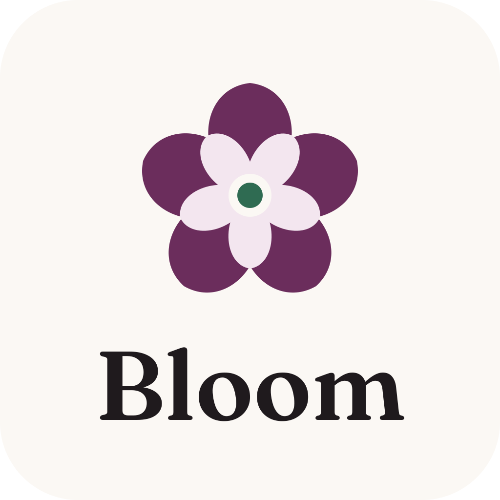

A private AI copilot for gynecology visits
Patients tell their story before the appointment; the doctor gets a cited one-page brief to confirm, edit or reject.
Demo with synthetic data only. Please don’t enter real health information.

Patients tell their story before the appointment; the doctor gets a cited one-page brief to confirm, edit or reject.
Demo with synthetic data only. Please don’t enter real health information.